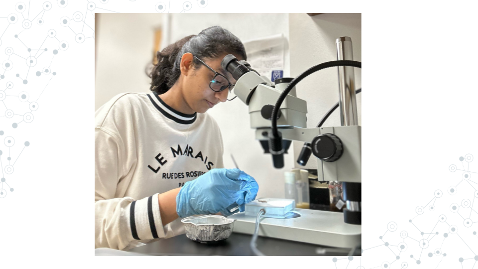

4.7 Pursue further research
Perhaps you’re interested in pursuing research beyond what C-MOOR currently provides. Maybe you’re more interested in wet lab work, or a specific model organism. We encourage you to try all sorts of different opportunities even if you feel totally comfortable working with C-MOOR so you can better understand what kind of roles suit you best. This section serves as a guide for some common jumping off points to find outside research opportunities.

4.7.1 Research opportunities at your institution
Many colleges and universities have research programs for their students or resources available to connect you to some. You can ask your instructor, adviser, or library for more information. Some popular programs include:
Undergraduate Research Opportunity Programs (UROP): Which often provide a database or pipeline of research opportunities for students at the univeristy or from surrounding areas.
Research experiences for undergraduates (REU): Similar to UROP, but generally open for a wider audience of students from outside the community. See the NSF REU website for more information.
Opportunities come and go and often follow the academic-year in terms of availability. If you can’t find something immediately, keep trying!
4.7.2 Find a research lab to join
You can choose to pursue additional research opportunities in what we consider the more traditional way: by reaching out to a professor or research scientist whose work you are interested in and asking if they might be willing to have you in their lab. As these opportunities are at the discretion of the lab leader they will vary widely in their scope, duration, and ability to provide financial support.
An email to a potential research lab should contain:
- An introduction about yourself (name, class year, institution, major)
- 1-2 sentences about your previous experience in research
- 1-2 sentences about why you’re interested in their lab specifically
- A polite, open ended request to work with them
Dear Professor Penguin,
My name is Student, and I am a junior at My University majoring in biology (or other). I read your chapter on the genetics yellow-eyed penguins in Penguins: Natural history and conservation, and then checked out your profile on the University website. My interests are broadly defined in environmental toxicology and I am interested in the work you are doing using eDNA and studies on the effects of plastic on developing penguin transcriptomes.
I previously completed a project as a part of an RNA-seq miniCURE and have some exposure to working with DESeq2, though I still have much to learn. My group and I profiled the gene expression of the genes XYZ in the Drosophila midugt and I presented our poster at our university’s research day poster session.
Thank you for your time and consideration in reading my email. Please let me know if you are currently available to mentor an undergraduate in your lab and if you would be willing to have me as a potential student. I hope to hear from you soon!
Don’t be surprised if it takes the researcher a while to get back to you or if they respond curtly. They likely get many requests and are very busy. Continue to reach out to labs and apply to programs; it is difficult to know when opportunities are available as funding fluctuates.